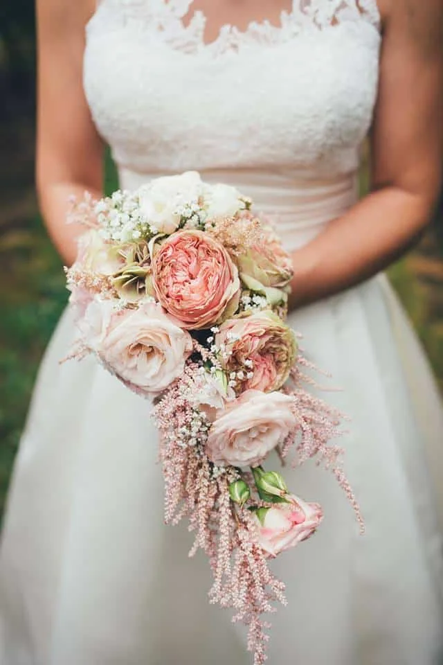
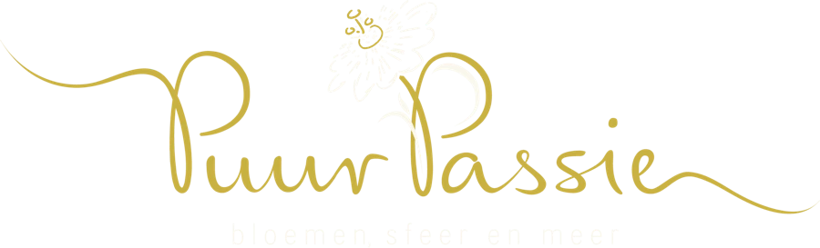
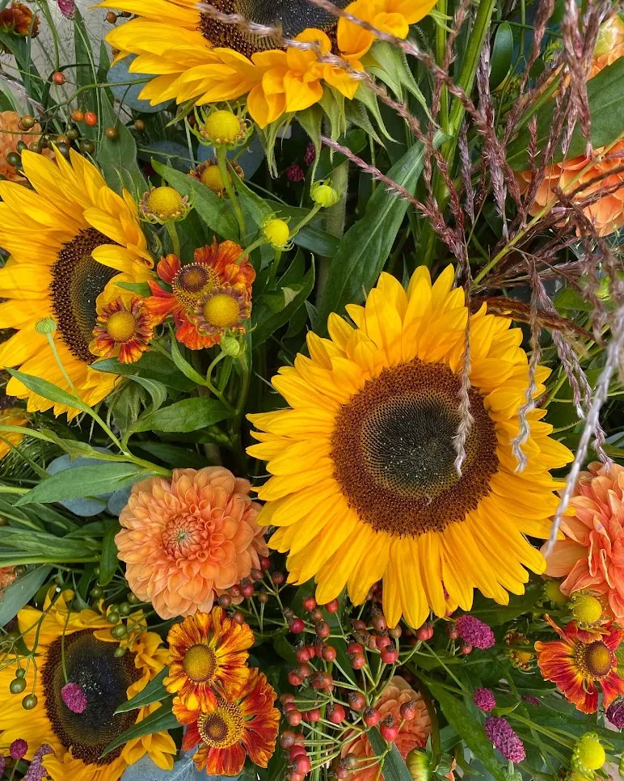
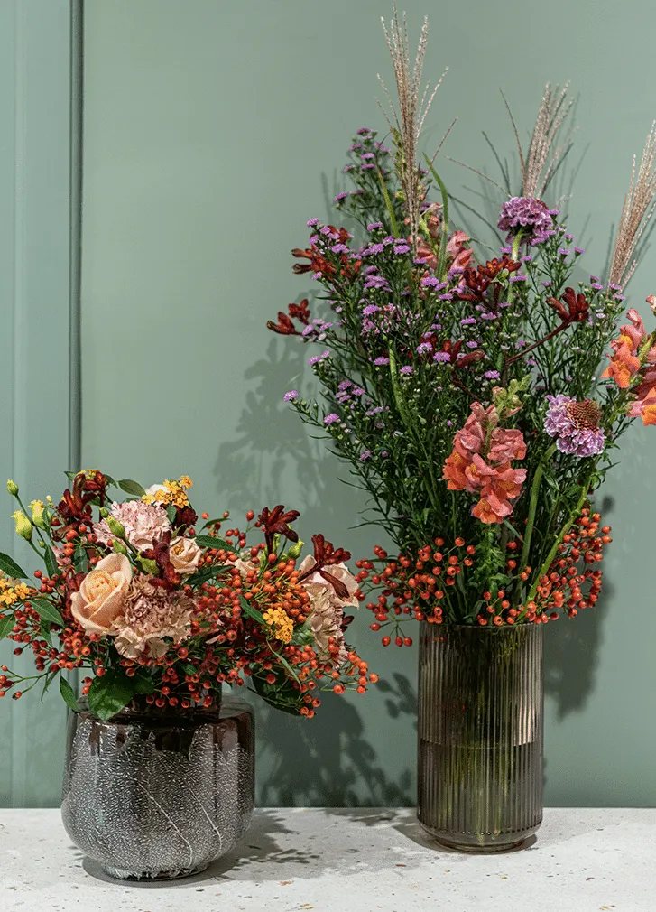
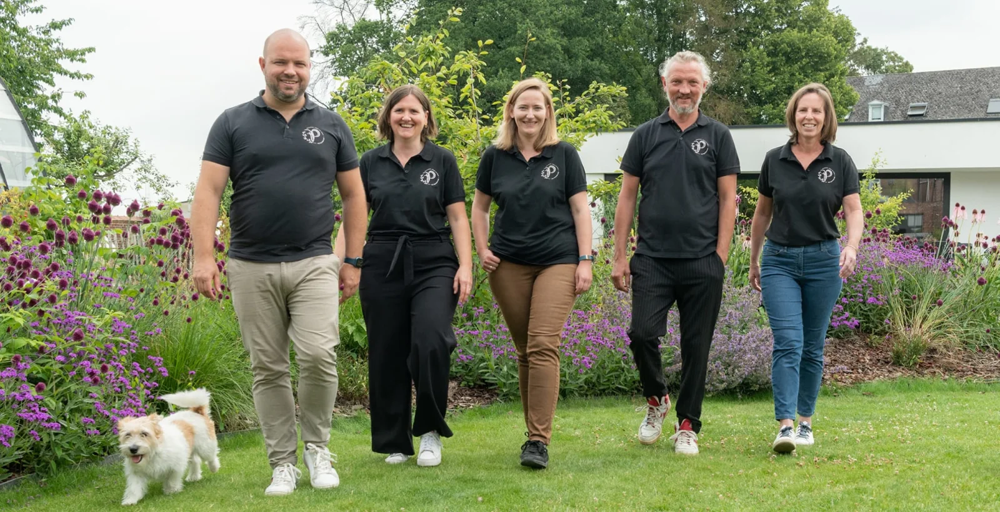
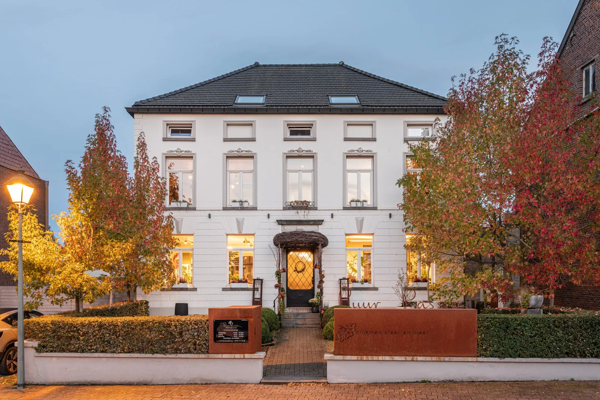

Huwelijk en feest
Van bruidsboeket en kerk tot de bloemen op elke tafel. We zitten eerst samen, zodat alles klopt.
Op maat besproken

0476 75 42 99Davy en zijn team binden elk boeket ter plaatse, zoals jij het wil. Voor zomaar, voor je trouwdag of voor een laatste groet. Kom binnen aan de Plaats en wandel gerust door naar de tuin.


Een vrolijk boeket voor zomaar, de bloemen voor je trouwdag of een laatste groet. We bespreken alles persoonlijk, in de stijl die bij jou past.

WebshopGebonden in de winkel, terwijl je wacht. Of bestel online en laat leveren of haal op.

Van bruidsboeket en kerk tot de bloemen op elke tafel. We zitten eerst samen, zodat alles klopt.

Rouwwerk in de kleuren en de stijl van de persoon die je mist. Rustig en persoonlijk.

Thuis of op kantoorElke week, twee weken, maand of seizoen verse bloemen. Wij zorgen voor de rest.



Aan de Plaats sta je meteen tussen emmers vol verse bloemen, vazen in alle kleuren en de creaties van de dag. Wij helpen je kiezen, of binden ter plaatse een boeket zoals jij het wil.
“Eens in de tuin, achteraan de bloemenwinkel, kom je in een oase van rust en word je zeker verrast door planten, struiken, bloemen (…)”
Gina Lodewijckx, op Google

Achteraan in de tuin ligt ons zaaltje. Een ervaren florist toont je zijn geheimen, jij krijgt de mooiste bloemen en al het materiaal, en er staat een hapje en een drankje klaar. Je gaat naar huis met een bloemstuk dat je met trots toont.
★★★★★“Davy deed de bloemen voor onze trouw, waarbij alles tip top in orde was! Zowel tijdens de eerste als tweede afspraak verliep alles zeer vlot en duidelijk met een vleugje humor. Davy wist precies wat we voor ogen hadden.”
★★★★★“We konden niet gelukkiger zijn met de bloemen op onze trouwdag. Alles was exact zoals we het ons hadden voorgesteld.”
Plaats 4, 1570 Tollembeek
0476 75 42 99 · davy@puurpassie.be

Ik maakte deze demo voor jullie om te tonen wat er kan. Na een kort gesprek maak ik er iets veel persoonlijkers van, helemaal naar jullie wens.
Vrijblijvend. Ik kom langs of we bellen.
Op maat, op jullie eigen domein.
Geen voorschot. Jullie betalen pas als alles klaar is.
Hosting, domeinnaam en kleine wijzigingen, zoals nieuwe openingsuren.
Omdat een voorbeeld meer zegt dan een mail. Zo zien jullie meteen wat er kan, en het kost jullie niets.
Nee. Het gesprek is vrijblijvend. Vinden jullie het niks, dan is het daarmee gedaan.
Na ons gesprek staat jullie site binnen 10 tot 14 dagen online.
Zeker. Jullie domeinnaam kan gewoon blijven, de nieuwe site komt in de plaats van de oude.
Nee, dat doe ik op basis van ons gesprek. Eigen foto's zijn mooi meegenomen, maar niet nodig om te starten.